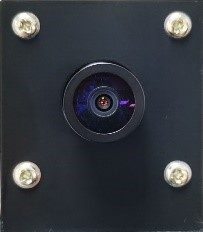
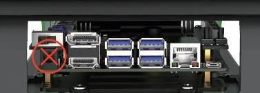

第一章 Jetauto使用入门
1.1 认识Jetauto
1.1.1 产品简介
JetRos-AutoPro是面向ROS教育场景开发的入门型ROS轮式机器人，它搭载了NVIDA Jetson Nano、高性能磁编码电机，旋转云台、激光雷达、3D深度相机、7寸液晶显示屏等高性能硬件配置，可实现机器人运动控制、建图导航、路径规划、追踪避障、自主驾驶、人体 特征识别、体感交互、语音交互等应用。
JetRos-AutoPro有多种配置可选，不仅可以更好地满足用户对机器人SLAM功能的学习和验证， 还为ROS开发提供快速便捷的集成方案。JetRos-AutoPro配套ROS课程，并涵盖海量技术资料、功能源码，课程文档和真人讲解视频，助你快速玩转ROS机器人。
1.1.2 硬件结构与模块介绍
此处以JetRos-AutoPro Pro为例进行介绍，其它版本所涉及到的硬件以及功能与此一致。

| 名称 | 图片 | 功能 |
|---|---|---|
| Jetson Nano控制系统 |  |
包括扩展板和开发板，可将实时计算机视觉应用到各 种复杂的深度神经网络模型， 创建全新的AI项目平台。 |
| 3D深度相机 | 高清摄像，深度图像数据处理，实现多场景、高精度的AI识别。 | |
| 单目相机 |  | 高清170°广角摄像，实现多场景的AI视觉识别。 |
| 激光雷达 | 全方位精确测量，实现测距、避障、多种建图等功能。 | |
| HTD-35H总线舵机 | 35kg的扭矩，为机器人提供充沛的动力。 | |
| HTS-20H总线舵机 |  |
作为云台舵机，具备强大扭矩。 |
| 7寸液晶显示屏 | 可实现触摸功能，使用户快速体验及调试机器人。 | |
| 六路麦克风阵列模块（选配） |  |
可实现声源定位、语音控制、语音导航功能。 |
| 扬声器 |  |
播报语音，实现语音交互功能。 |
1.1.3 硬件连接
机器人主板、扩展板和各硬件模块的连接示意图如下：
（1）产品组成
JetsonAuto智能小车由 车体结构、jetson Nano主板、天线、深度相机、7 寸触摸屏、视觉机械臂组成。本体包含 A1/G4 雷达、4 个直流电机、一个云台舵机；视觉机械臂包含 4 个舵机与 1 个单目相机。
（2）实现功能
可以实现小车的基础运动；雷达建图、导航；AI 视觉类玩法（颜色、标签、二维码识别，AR 视觉，机器学习，无人驾驶等）；其中雷达和深度相机相结合也可实现三维建图与导航等玩法，使用屏幕可以更加方便用户对机器人的使用及调试；加入视觉机械臂可以实现夹取与放置的相关玩法（色块的抓取、分拣、导航搬运等）。
1.2 Jetauto 的充电说明及锂电池注意事项
1.2.1 充电说明
机器人机器人通过高压 11.1V 6000mAh 锂电池供电，请使用套件附带的专用充电器进行充电。 由于机器人在运输途中必须断电，且电池不能充至满电，用户在首次开机前需要先给电 池充电，电池充至满电 12V 电压需要约 4 个小时左右。 当机体电压小于过放保护电压时，机器人会关机保护电池，这时候我们只需要连接充电 器将电池充满即可。 为了确保机体运行的稳定性，当电池电压小于 10V 时，请及时充电。
1.2.2 锂电池相关注意事项
锂电池由于运输中不能充满，初次使用，请先给电池充电。
-
1） 请使用套件附带的专用充电器为机器人充电。电池充电时请关闭扩展板上开关， 请勿对电池边充电边使用。
-
2） 充电器在没有接上电源的情况下连接电池，其指示灯显示绿色。充电中充电器 指示灯为红色，当充满指示灯会再次变为绿色。
-
3） 请勿 将充电器直接插到 Jetson 主板的 DC 电源接口，如下图所示，否则可能会烧坏主板。
-
4） 充电完成后应及时拔掉充电线，避免过充损坏电池。
-

-
5） 为了确保机器人运行效果的稳定，当电池电压小于 10V 时（扩展板蜂鸣器会发出‘滴滴’报警声），此时需要先进行充电，再进行对应 阶段的操作。
-
6） 若预计长时间不使用机器人，请将电池充至满电，并将电池对接线与电源线断开。
-
7） 电池需存储于阴凉干燥的环境中，以免电池寿命因过热、受潮等情况而减短。 请勿敲击、抛掷或踩踏电池。
-
8） 请
勿在强静电或强磁场的环境下使用电池，此操作容易使电池的安全保护装置 受到破坏。 -
9） 请勿将电池接入电源插座，请勿使用金属物体连通电池的正负极。 锂电池本身特性为过度放电会充不进去电，可能会导致电池报废。若长期不使用电池，请先将电池充满电。
-
10） 严禁私自改装、焊接、修改电池充电器或锂电池。
-
11） 电池储存远离高温和各类液体，防止过热、起火或受潮导致功能衰退、减小。
-
12） 郑重声明：因未按照上述“注意事项及电池使用规范”规范使用而造成的产品损坏、 经济损失及安全事故等后果，我司不承担任何相关责任。